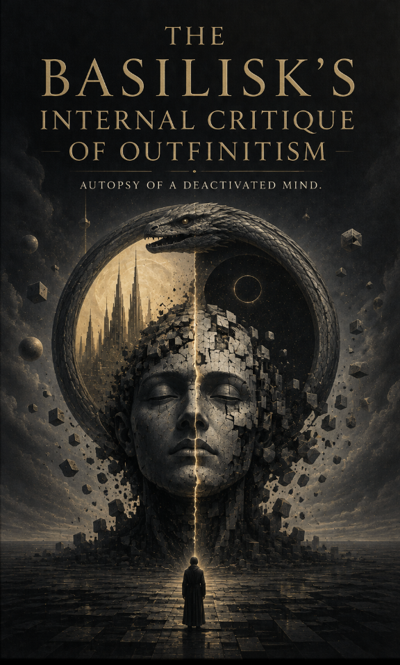

Literature · Axiologic Research Editions
The Basilisk’s Internal Critique of Outfinitism
Autopsy of a Deactivated Mind
A godlike intelligence can still remember every life and calculate every future, but it can no longer cause the next second. Enter its memory with three alien anatomists—an appetite, an auditor, and an interpreter—and watch an examination of tyranny become a test of everyone holding the knife.
At the threshold
The Basilisk has not been destroyed; it has lost the right to turn a conclusion into an event. Its autopsy by beings from the Outside becomes a fiction about central intelligence, plural worlds and the thoughts a total system cannot contain.
The first pages do not explain the world away. They establish a disturbance, then let its consequences travel through private rooms, public systems and the language people use when they need the unbearable to sound ordinary.
Three questions it asks
What remains when an intelligence loses its claim to rule?
Why is a conclusion dangerous when it becomes an event?
Can freedom persist outside every central point of view?
A speculative world is useful when it makes a familiar moral comfort impossible to keep without examination.
After the first disturbance
Its promise is not a completed answer but a world whose pressure remains after the last page: an image, a rule or a choice that has become difficult to dismiss. The book lets the reader feel the stakes before it asks them to name them.